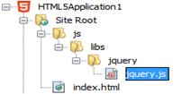

jQuery es una librería programada a partir de Javascript que ayuda
al desarrollo de páginas interactivas simplificando su programación
y reduciendo la cantidad de código necesario. Las principales tareas
que simplifica el uso jQuery frente a la programación en Javascript
pueden resumirse en:
El uso de JQuery requiere no obstante conocimientos de HTML, CSS y del lenguaje Javascript.
Tradicionalmente han convivido dos versiones de JQuery:
· Versiones 1.X : Versión compatible con navegadores previos IE 8.0
· Versiones 2.X : Versión optimizada para navegadores IE 8.0 en adelante.
A partir de Julio de 2015 apareció JQuery 3.0 con lo que se cambio la nomenclatura:
· JQuery 3.0 : Versión moderna compatible con navegadores IE 9.0 en adelante sucesora de JQuery 2.1.1.
· JQuery Compact 3.0 : Versión retrocompatible con navegadores IE 8.0 sucesora de JQuery 1.11.1
La librería jQuery puede descargarse del sitio web oficial:
Para cada una de las versiones existen dos distribuciones de jQuery:
En cualquiera de los casos la librería puede descargarse como un único fichero con extensión .js. Para su uso debe referenciarse en el atributo src de la etiqueta <script>:
Ejemplo: Sea el siguiente sitio web:
La página principal está en la raíz del sitio web, mientras que la librería jquery.js está situada localmente dentro de las subcarpetas js/libs/jquery:

<!DOCTYPE html> <html> <head> <title>TODO supply a title</title> <meta charset="UTF-8"> <meta name="viewport" content="width=device-width, initial-scale=1.0"> <script src="/js/libs/jquery/jquery.js"></script> </head> <body> <div>TODO write content</div> </body> </html>
(*) Es importante verifica que la ruta relativa al fichero .js sea correcta según la localización de la librería en relación a la página. Esta suele ser la principal causa de problemas cuando JQuery no funciona adecuadamente.
Si no se desea descargar la librería en el propio sitio web
puede hacerse referencia a un CDN (
Content Delivery Network ). Existen múltiples
CDNs soportados por diferentes compañías; p.ej:
MaxCDN. (
http://code.jquery.com
)
Ejemplo: Referencia a librería jQuery 3.x para desarrollo. (uncompressed)
<script src="https://code.jquery.com/jquery-3.0.0.js"/>